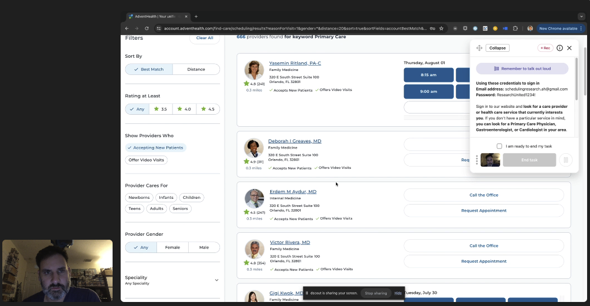
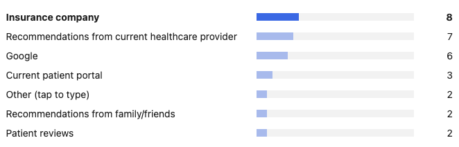
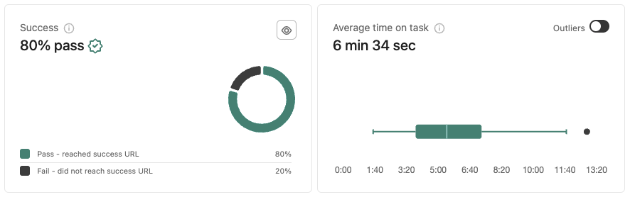
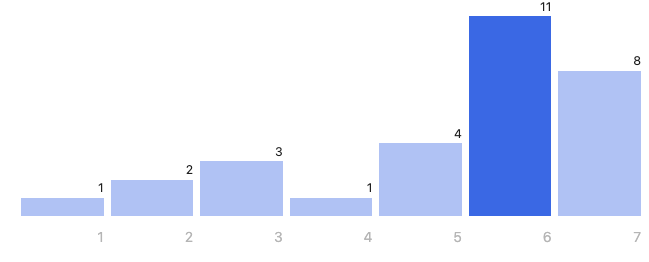

30
Case study
Finding Care - Understanding Behavior
A study observing how patients interacted with the updated Find Care experience in their AdventHealth accounts, with a focus on usability, search behavior, and what made provider results feel useful.
Study Overview
The study aimed to observe and analyze how patients interact with the updated Find Care experience in our patients' accounts. This was done to gain insights into its usability, experience, and overall reception.
The findings will be used to make design improvements and guide decision-making in future iterations. We also tested the assumptions that consumers might overlook other areas of the search bar and that behaviors between the Find Care and Search Results pages will differ.

Key Findings
- The top entry points for finding care were the Find Care menu option and PCP chip.
- Participants scrolled past providers that did not offer online scheduling, profile images, or patient reviews.
- The ability to filter by insurance, gender, language, and specialty was found to be valuable.
- The participants had difficulties accessing specialty care due to limited availability of options.
- Participants who were very specific with their search criteria more often than not returned zero results with no explanation of why.
- The inability to find other services like acupuncture or physical therapy was a point of contention.
- Of the consumers who interacted with the date range picker, their initial interaction would use the feature to select a single day vs a ranges of dates.
Who We Interviewed
Our pool consisted of 30 participants, both men and women, from our current major markets. They were decision makers for their family's health care and has experience with online portals and scheduling their appointments online.
Participant profile
Age Groups
Participant profile
Location
Our Observations
Previous Shopping Experiences
In their past shopping experiences, participants mentioned that they had difficulty finding a primary care physician who met their specific criteria. This included specific ratings, reviews, specialization, and acceptance of their insurance plans.
They also expressed frustration over long waiting times and inflexible scheduling for specialist appointments, such as those for ENTs, dermatologists, and therapists.
A common complaint was the lack of clear and reliable information regarding healthcare services and insurance coverage costs, leading to the risk of surprise bills or unexpected co-pays.
Participants emphasized the value of patient reviews and personal recommendations when selecting healthcare providers, especially in situations where online information was limited or unreliable. However, they also noted the potential biases and variability in online reviews.
Satisfaction rating
Previous Shopping Experiences
Stream video
Existing Search Experiences
Scheduling appointments, especially with specialists, is frustratingly slow, and there is significant confusion about costs and insurance coverage.
Patient portals lack clear information on insurance network status, adding to the complexity. Inconsistent experiences with healthcare facilities and staff further highlight the importance of personal recommendations.
Overall, patients desire more transparency, reliable review mechanisms, better scheduling systems, and improved patient portal functionalities to enhance their healthcare search experience.
Insurance is crucial
In our previous research, we found that consumers typically begin their healthcare journey by confirming whether the providers they are considering accept their insurance.
This study further corroborates these findings, as well as the common practice of seeking recommendations from their current healthcare providers and Google.

“I'm looking across three different things; If they're accepted by my insurance, if they're getting good reviews, and where they're located.” Pamela J.
Understanding their Behavior
The participants had a generally positive experience using the website to search for healthcare. They appreciated the simplicity and effectiveness of the filters, which allowed them to specify their preferences, such as the gender of the doctor, expertise, language, and ratings. They also liked the simple design of the site, which made it easy to use.
Detailed doctor profiles, including information on their reviews, education, and specializations, received positive feedback. Additionally, the convenience and efficiency of being able to schedule appointments online were highlights for participants.
When comparing the participants' past experiences in seeking healthcare with our current experience in a patient's AdventHealth account, there was no significant difference between the two experiences. In fact, the calculated CSAT scores for both experiences were 63%.
Satisfaction rating
Satisfaction with the AdventHealth Shopping Experience
Task: Sign in to our website and look for a care provider or health care service that currently interests you. If you don't have a particular service in mind, you can look for a Primary Care Physician, Gastroenterologist, or Cardiologist in your area.

First-click data
First Click After Sign-in
Based on first-click data, 40% of the participants selected "Find Care" from the menu, while 30% opted for the “Primary Care Provider” common searches chip to begin looking for care.

Search terms
Search Criteria
Stream video
Leah - AH Shopping Experience
Stream video
Amy - Shopping Experience
Our system had trouble understanding common medical terms like "ENT" when participants entered them in the search bar. As a result, it provided unhelpful or irrelevant recommendations.
For example, our participant Amy had to resort to using Google to find the correct medical term. When she entered the updated term in our search bar, the search results showed care options that were unrelated.
Participants had mixed feelings about the coverage of our services. While some found the options in certain areas plentiful and detailed, others faced significant limitations based on their location.
For instance, one participant was disappointed to find no dermatologists available, while another could not locate any primary care physicians in one of our major markets. These experiences highlight the need for broader coverage options and perhaps alternative solutions, such as virtual options that cater to patients on the outskirts of our market areas.
Stream video
Denise - Blown away-174903
The scheduling process was highlighted as a strong point of the service, with participants finding it convenient to book appointments online without needing to make phone calls. This feature was seen as a significant delighter, as it provided clear information about the doctors, their availability, and reviews.
However, participants were frustrated by the lack of immediate appointment availability in the search results and the need to request appointments rather than being able to book them directly. Additionally, there was a concern about the inconsistency in showing providers' availability, as some participants found providers listed with no available slots when viewing the provider detail pages.
Stream video
Laura - Impressions
Other Observations
Map View
Participants expressed a desire for a map view to see the geographical locations of providers relative to their own location.
Sorting and Filtering Options
Participants wanted more robust sorting options, such as by distance and appointment availability, and added filters to remove options that did not offer online scheduling or providers without images to better match their preferences with the search results.
Disappointment with availability
Consumers become frustrated when they find a provider only to discover there is no availability (sometimes 3+ months) when they visit the provider page.
Notification for Availability
There was an ask for a system to notify participants when unavailable providers become available.
Range of Services
The inability to find certain services like acupuncture, physical therapy, and Dermatologists was a point of contention.
Search Result Relevance
Search results were not always relevant to the entered criteria (e.g., searching for PT showing neurology results).
Conclusion
In conclusion, the site was generally well-received for its clean design, ease of use, and filtering options. Participants valued seeing detailed information about doctors, including reviews and availability for online booking. However, there are issues with the availability of options for those on the edges of our geographical coverage. Other issues, such as search functionality and limited availability of online appointment scheduling deep within our market locations, highlighted areas for improvement.
It is recommended that we improve the website's ability to serve participants within and just outside our markets who have limited provider options. Also, enhancing search accuracy with simple language commonly used by patients and offering more immediate appointment options could greatly improve the overall experience of finding care.
Contact
Want to talk through the Finding Care study?
The entry-point patterns, how insurance shaped trust, or what search relevance and availability exposed about the experience — happy to get into any of it.
A good conversation is usually the best start.